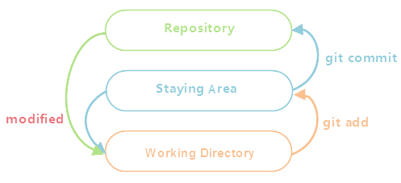
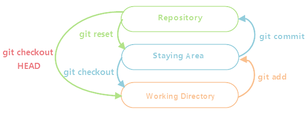
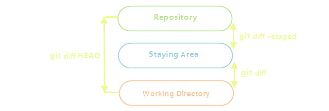

[Git使用手册]-2-版本控制基础
引言
这篇文章结合"git模型图"介绍本地git仓库文件的添加、修改、删除等操作。
文章目录
0×1.Git模型图
文件提交：
如下图所示，每当使用"git init"将一个文件夹初始化成仓库后，就相当于在这个文件夹中创建了三块虚拟区域，所有复制（或创建）到这个仓库文件夹下的文件，都被"存放"在"Working Directory"这个虚拟区域中；通过"git add"命令，可以将这些文件添加到"Staying Area"区域中，"Staying Area"区域也叫"暂存区"；通过"git commit"命令可将"Staying Area"区域中的文件提交到"Repository"区域，当文件被修改后，最新修改的版本又将返回"Working Directory"区域中；假设文件修改前被add到了"Staying Area"区域，"Staying Area"区域中将保留此文件的上一个版本，即未被修改前的版本，文件修改后返回"Working Directory"区域中，修改后的文件可以重新add到"Staying Area"区域覆盖上一个版本，也能取出上一个版本，覆盖"Working Directory"区域中修改后的版本；而同一个文件每次被提交到"Repository"区域都会在该区域保留一个历史版本，可以查看这些历史版本，也可以提取某个历史版本覆盖到下面两个区域中的任意一个区域中；
根据上面的说明相信大家已经猜到了，在git系统中，一个文件从"Working Directory"到"Repository"的一次完整的提交会在这三个虚拟区域中产生三个版本，相当于同一个文件不同时期的三个副本，而"Repository"区域中保存了这个文件每次提交上来的完整副本链（从第一次提交到最后一次提交这个文件的所有版本，每次提交到"Repository"不会覆盖上一个版本，而是重新创建一个新的版本），而"Staying Area"区域中仅包含这个文件最新add的版本，每次从"Working Directory"区域add到"Staying Area"区域，都会覆盖上一个版本。
Ps：上面所说的"区域"只是一个虚拟概念，实际上git是通过给文件添加"标记"来实现这一过程，在git仓库中所有文件的当前状态以及历史记录，都被保存在仓库下面的".git"文件夹中。
版本撤消：
如下图所示，"git reset"命令能将"Repository"区域中某个文件最新的那个历史版本取出覆盖到"Staying Area"区域，"git checkout"命令能将"Staying Area"区域中某个文件的上一个版本取出覆盖到"Working Directory"区域，"git checkout HEAD"命令能直接将"Repository"某个文件的最新历史版本取出覆盖到"Working Directory"区域；
版本比较：
版本比较命令能够显示修改后和修改前同一个文件不同版本之间的不同之处，如果不同区域之间文件的内容没有改变，将不会返回任何信息；如下图所示，"git diff"命令能显示"Working Directory"与"Staying Area"之间的不同；"Staying Area"与"Repository"之间需要使用"git diff --staged"命令；"git diff HEAD"能够查看"Repository"中最新的历史版本与当前"Working Directory"中最新修改的版本之间的不同。
本文仅演示文件提交这一过程，版本撤消与版本比较将在后面一篇文章中详解。
0×2.Git实例
a.添加文件到Staying area
在上一篇文章中，我们创建了一个目录，名称叫做"myblog"，并且已经将它初始化成Repository，进入这个文件夹中，创建几个文件：
#在本地仓库目录"myblog"中创建两个文件，并查看git状态 qing@qingsword.com:~$ cd myblog/ qing@qingsword.com:~/myblog$ touch index.html qing@qingsword.com:~/myblog$ touch readme.md #查看本地仓库中的文件状态有下面两种方法，添加参数"-s"能够简化输出，从输出中可以看到，新建的两个文件并没有被git跟踪，他们处于"Working Directory"区域 qing@qingsword.com:~/myblog$ git status 未跟踪的文件: index.html readme.md #没有被跟踪的文件前面会出现两个"问号"，这是因为git会给每个文件分配两个标记位，当git还没有跟踪时，这两个标记位用"问号"标识 qing@qingsword.com:~/myblog$ git status -s ?? index.html ?? readme.md
将文件添加到"Staying Area"：
#语法：git add 文件1 文件2 文件3 ... qing@qingsword.com:~/myblog$ git add index.html readme.md #查看git状态，被add的文件，第一个标识位出现一个"A"，表示这个文件已经添加到了"Staying Area"区域中 qing@qingsword.com:~/myblog$ git status -s A index.html A readme.md qing@qingsword.com:~/myblog$ git status 要提交的变更： 新文件: index.html 新文件: readme.md
b.修改文件
现在文件已经添加到了"Staying Area"区域中，在继续向上提交到"Repository"前，尝试修改一下文件index.html：
#在index.html中添加一段文本，本文添加了"www.qingsword.com"这个网址 qing@qingsword.com:~/myblog$ echo www.qingsword.com >> index.html #再看git状态，index.html文件的标识符变成了"AM"，还记得第一节的第一张图吗？所有修改后的最新版本，都将回到"Working Directory"区域，但这并不意味着删除了"Staying Area"区域中的index.html文件，"Staying Area"区域中的index.html文件仍然存在，但它是未修改前的版本，如果此时使用commit命令提交到"Repository"，提交的也是"Staying Area"区域中的index.html文件版本，而不是修改后的版本，除非重新使用add将最新修改的版本覆盖到"Staying Area"区域 qing@qingsword.com:~/myblog$ git status -s AM index.html A readme.md qing@qingsword.com:~/myblog$ git status 要提交的变更： 新文件: index.html 新文件: readme.md 尚未暂存以备提交的变更： 修改: index.html
暂时保留这个状态，不重新将修改add到"Staying Area"区域，所以现在index.html文件存在两个版本，一个是修改前add到"Staying Area"区域的，一个是修改后的，在"Working Directory"区域，继续下面的实验。
c.提交文件到Repository
尝试将"Staying Area"区域中的"index.html"以及"readme.md"这两个文件提交到"Repository"区域中，因为是第一次提交，这会在"Repository"区域中给这两个文件分别创建一个最原始的历史版本记录：
#语法：git commit -m '自定义的提交注释信息' #因为没有创建分支，默认直接提交到了master这个主分支下，分支的概念后面的文章会详细介绍 qing@qingsword.com:~/myblog$ git commit -m 'update' [master （根提交） 4dc4a0b] update 2 files changed, 1 insertion(+) create mode 100644 index.html create mode 100644 readme.md #再次查看git状态，现在只看到了一个修改后的"index.html"文件，并且标识位的低位，显示一个红色的"M"，这验证的上面所说的，修改后的版本并没有使用add添加到"Staying Area"，所以并不会被提交 qing@qingsword.com:~/myblog$ git status -s M index.html #现在使用add将index.html文件的最新版本add到"Staying Area" qing@qingsword.com:~/myblog$ git add index.html #查询状态发现，标识位的高位出现了一个绿色的"M" qing@qingsword.com:~/myblog$ git status -s M index.html #如果在提交到"Repository"区域前，再次修改index.html qing@qingsword.com:~/myblog$ echo www.qingsword.com >> index.html #这一次，文件的高低位都出现了"M"，高位绿色，低位红色 qing@qingsword.com:~/myblog$ git status -s MM index.htm
现在需要解释一下文件的git状态标识了，git的状态标识位有两位，从左到右，分别为高位和低位：
高位 低位 文件名
在本地仓库文件夹中，文件状态标识位遵循以下规律：
1）如果一个文件被复制或者创建到本地的仓库文件夹中，并未使用add添加过，初始的git状态标识符高低位都用"问号"表示；
2）如果一个文件被add到"Staying Area"区域，并且"Staying Area"中并无这个文件的上一个版本，那么这个文件的高位用"A"表示，低位为空；
3）如果一个文件被修改，给这个文件的低位添加红色"M"标识；
4）如果一个文件被修改，且被add到"Staying Area"区域，之后再没有修改，并且"Staying Area"区域中有这个文件的上一个版本，这个文件的高位被添加绿色"M"标识，低位为空；
根据上面的理论，再看"index.html"文件的git状态，就很容易理解为什么会出现两个"M"，其一，这个文件在之前被add过，在"Staying Area"区域中有这个文件的上一个版本，然后这个文件被修改过，修改之后再次被add过，所以文件的高位会出现绿色"M"，再后来，这个文件再次被修改，文件的低位又出现了红色"M"。
接着上面的实验，将修改后的版本提交到"Repository"区域：
#所有修改后的文件需要重新add，才能将最新版本提交到"Repository"区域中 qing@qingsword.com:~/myblog$ git add index.html #只有高位绿色"M"了 qing@qingsword.com:~/myblog$ git status -s M index.html #提交 qing@qingsword.com:~/myblog$ git commit -m 'update' [master 8bb1d39] update 1 file changed, 1 insertion(+) #再次查看状态，现在git状态为空，这表示，"Repository"中的最新历史版本与"Staying Area"中的版本，以及"Working Directory"中的版本保持一致 qing@qingsword.com:~/myblog$ git status -s
最后，补充一个小技巧，当仓库中的文件被修改后，如果想一步完成从"Working Directory"到"Staying Area"再到"Repository"的提交，可以使用下面的命令：
#修改文件，添加两段文本 qing@qingsword.com:~/myblog$ echo www.qingsword.com >> index.html qing@qingsword.com:~/myblog$ echo www.qingsword.com >> readme.md #文件以及被修改，git标识低位红色"M" qing@qingsword.com:~/myblog$ git status -s M index.html M readme.md #一次性提交，三区域同步，只需要添加参数"-a" qing@qingsword.com:~/myblog$ git commit -am 'update' [master 3c7b071] update 2 files changed, 2 insertions(+)
d.忽略列表
现在我们知道了，当一个文件被添加到仓库目录中时，git文件标识符会出现两个"问号"，但有时，我们希望在仓库目录中的部分文件不被git控制，作为本地文件使用，不被提交和跟踪，此时，就可以用到".gitignore"文件，请看下面的实例：
#在本地仓库目录中创建一个".gitignore"文件，写入规则，并将它提交到"Repository"中 qing@qingsword.com:~/myblog$ touch .gitignore #".gitignore"文件每行可以写一条规则，支持正则表达式，本例写入两条规则，忽略文件名后缀为.py与.js的文件，git将不跟踪这些文件，他们不会被提交，仅作为本地文件使用 qing@qingsword.com:~/myblog$ echo '*.py' >> .gitignore qing@qingsword.com:~/myblog$ echo '*.js' >> .gitignore #将".gitignore"文件添加到"Repository"中 qing@qingsword.com:~/myblog$ git add .gitignore qing@qingsword.com:~/myblog$ git commit -m 'update ignore file' #创建三个文件测试，两个.py，一个.js qing@qingsword.com:~/myblog$ touch a.py qing@qingsword.com:~/myblog$ touch b.py qing@qingsword.com:~/myblog$ touch a.js #发现新文件并未被跟踪，但仓库文件夹中确实存在这些文件，这就是".gitignore"文件的作用 qing@qingsword.com:~/myblog$ git status -s qing@qingsword.com:~/myblog$ ls a.js a.py b.py index.html readme.md
e.文件重命名
#将"index.html"重命名为"hello.html" qing@qingsword.com:~/myblog$ git mv index.html hello.html #标识位高位出现一个绿色的"R"，表示此文件被重命名了 qing@qingsword.com:~/myblog$ git status -s R index.html -> hello.html #重新将文件添加并且提交到"Repository" qing@qingsword.com:~/myblog$ git add hello.html qing@qingsword.com:~/myblog$ git commit -m 'rename' [master 95efd8b] rename 1 file changed, 0 insertions(+), 0 deletions(-) rename index.html => hello.html (100%)
f.移除文件版本控制
1）仅移除文件的版本控制，源文件仍然保留在"Working Directory"区域中，标识位变成两个"问号"，就像文件没有被添加前的状态
#移除"readme.md"文件的版本控制 qing@qingsword.com:~/myblog$ git rm -r --cache readme.md rm 'readme.md' #移除后还没有提交，git状态会出现两个同名文件，第一个文件标识位高位"D"，代表这次移除操作，第二个文件标识位全部是"问号"，代表这个文件已经被去除了版本控制 qing@qingsword.com:~/myblog$ git status -s D readme.md ?? readme.md #提交这次移除操作 qing@qingsword.com:~/myblog$ git commit -m 'rm readme.md' [master da8de4c] rm readme.md 1 file changed, 1 deletion(-) delete mode 100644 readme.md #再看状态，就只剩下未被添加的文件列表了 qing@qingsword.com:~/myblog$ git status -s ?? readme.md
2）移除文件的版本控制，并且删除源文件
#移除"hello.html"文件的版本控制并删除源文件本身，不携带"--cache"参数将删除源文件 qing@qingsword.com:~/myblog$ git rm -r hello.html rm 'hello.html' #这一次看不到"Working Directory"区域中的"hello.html"文件，仅看到一个标识了删除位的文件 qing@qingsword.com:~/myblog$ git status -s D hello.html ?? readme.md #提交操作后，"hello.html"文件将被删除 qing@qingsword.com:~/myblog$ git commit -m 'delete hello.html' [master 31c5316] delete hello.html 1 file changed, 3 deletions(-) delete mode 100644 hello.html qing@qingsword.com:~/myblog$ git status -s ?? readme.md #文件夹中看不到"hello.html"文件了 qing@qingsword.com:~/myblog$ ls a.js a.py b.py readme.md